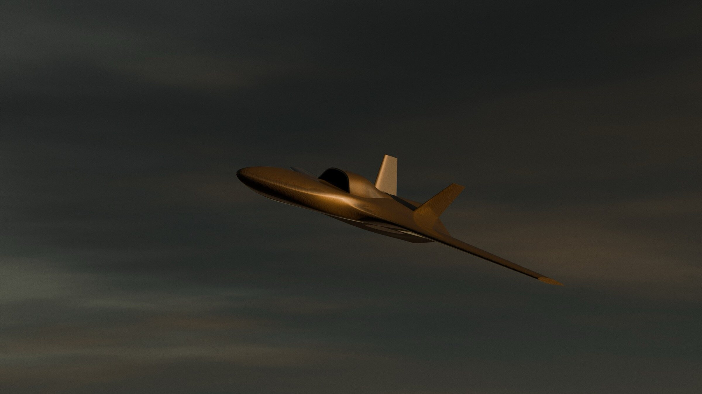

Hemlock family, the cruise missile generation
Deep-strike cruise missiles engineered to deliver multi-hundred-kilogram payloads across 1,000 km to 1,500 km standoff ranges. Built on the shared guidance architecture, Hemlock delivers cruise-missile kinematics at salvo unit economics.

What Hemlock is, and why it exists
While Nightshade establishes the flight core and industrial tooling, Hemlock scales the architecture into dedicated standoff cruise missiles. Rather than enlarging lightweight composite airframes, Hemlock integrates purpose-built air-breathing propulsion, hardened structural bulkheads, and heavy warhead bays capable of striking deep rear-echelon assets.
The family realizes the operational requirement articulated in the missing-middle doctrine: replenishable standoff weapons that penetrate modern integrated air defence networks without consuming irreplaceable strategic stockpiles. Sovereign defence requires two tiers. Exquisite platforms like BrahMos, Pralay, and LRLACM provide high-supersonic penetration against carrier groups and hardened command bunkers, but annual production rates remain constrained to dozens of rounds. Hemlock operates beneath this tier, delivering sustained monthly production rates of 80 to 120 missiles designed to saturate enemy air defences in forty-round salvos.
The two marks
A 1,000 km round light enough to matter
Carries a 75 kg modular penetrating or blast warhead over 1,000 km at 900 km/h (Mach 0.74). Deployed via solid-rocket-assisted zero-length canister launch, Mk I targets air defence radar emitters, forward supply dumps, and mountain tunnel portals. Sized to match the cost of thirty rounds to a single legacy cruise missile, Mk I drives the strike cost curve down to ₹350 per kg·km.
The heavy round: 1,500 km, 1,000 kg, terrain-following
The heavy long-range generation integrates a 1,000 kg payload class across a 1,500 km radius. An active terrain-following flight layer augments the core navigation stack, allowing the missile to hug valley contours below radar detection horizons. Priced at approximately ₹35 per kg·km, Mk II establishes the lowest cost per kinetic unit in the portfolio, delivering strategic deterrence at operational expenditure economics.
| Variant | Role | Payload | Range | Top speed | Navigation | Launch |
|---|---|---|---|---|---|---|
| Hemlock Mk I | Miniature cruise missile | 75 kg | 1,000 km | 900 km/h | Shared core · seeker terminal | Rocket-assisted take-off |
| Hemlock Mk II | Long-range cruise missile · force multiplier | 1,000 kg class | 1,500 km | 900 km/h | Shared core + terrain following | Rocket-assisted take-off |
Why Hemlock wins the cost curve
Legacy cruise missiles remain prohibitively expensive because their airframes house bespoke subsystems: radar terrain-contour matching (TERCOM) units, militarized inertial navigation platforms, and low-yield proprietary avionics requiring decade-long qualification programs. Hemlock replaces specialized hardware with deterministic software. The shared guidance core executes optical scene correlation across high-throughput commercial compute, using open satellite elevation baselines for midcourse drift correction and passive imaging seekers for terminal intercept.
Combined with resin-transfer-molded composite bodies and automotive steer-by-wire servo actuators, Hemlock bypasses the aerospace autoclave queue. Production scales within domestic automotive and precision foundry supply chains, lowering unit cost with every manufacturing iteration.
Roles and the salvo argument
- Deep interdiction against fortified targets: Strikes hardened aircraft shelters, command centers, runway intersections, and railhead bridges that lightweight loitering munitions cannot breach.
- Force multiplier for strategic stockpiles: High-volume salvo employment against defended sectors forces enemy batteries to expend interceptor missiles and activate tracking radars. Crewed strike aircraft and exquisite hypersonic rounds penetrate through the depleted corridors.
- Structured salvo synchronization: Pre-programmed arrival times saturate target engagement channels simultaneously, ensuring warhead delivery regardless of local interceptor density. The salvo arithmetic →
Development plan and gates
| Stage | Timing | Gate to clear |
|---|---|---|
| Mk I design and bench qualification | 2027–2028 | Engine family qualified at rate; structures demonstrated on the production base. |
| Mk I prototype | Q2 2029 | Full-envelope flight with seeker terminal; envelope re-verified in the flight loop. |
| Mk I production | Q4 2029 | Rate tooling proven; unit cost at rate held to plan. |
| Mk II prototype | Q2 2030 | Terrain-following layer demonstrated at low level with the heavy airframe. |
| Mk II production | Q1 2031 | Heavy warhead qualification and booster launch at full launch mass. |
Dependencies tracked openly: the Hemlock engine family and seeker volumes at rate are the two conditions that matter most. Both are on the supply-chain gap list.